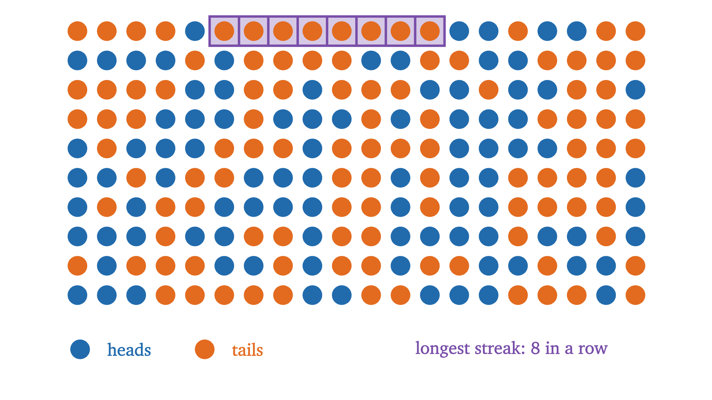
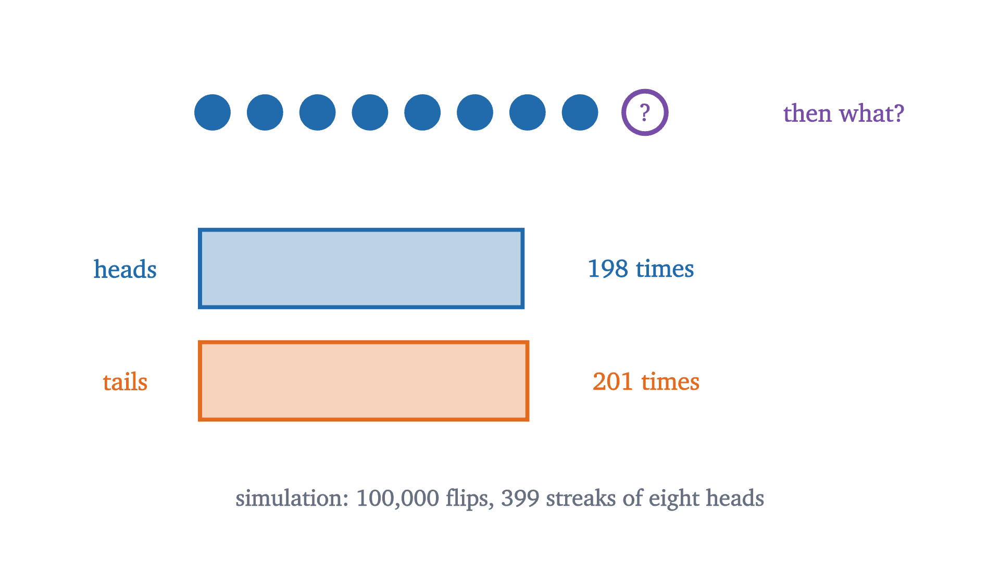
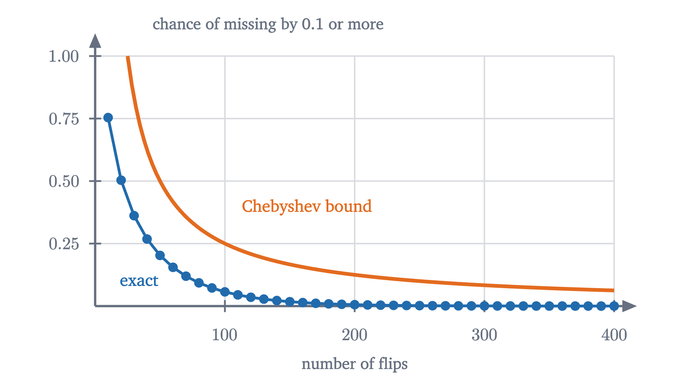

The law of large numbers, and the gambler's fallacy
A fair coin has no memory, yet its share of heads settles at one half. The weak law of large numbers says exactly how, and Chebyshev's inequality proves it.
AssumesExpected value and the surprising power of adding averagesBinomial distribution: Pascal's triangle and a Galton board
At a roulette table, red has just come up eight times in a row. A crowd gathers, and most of it bets on black. The reasoning sounds solid: in the long run red and black come up equally often, the wheel is now eight reds ahead, so black is due.
On the other side stands a fact nobody at the table would deny if asked directly. The wheel is a lump of wood and metal. It has no record of its last eight spins and no means of consulting one.
Both beliefs are held by sensible people, often by the same person, and they pull in opposite directions. The second says the next spin is like any other. The first says long-run proportions even out, and seems to need the wheel to compensate. The crowd’s conclusion has a name, the gambler’s fallacy, and a famous casualty list: at Monte Carlo in 1913, the story goes, black came up 26 times in a row while players lost fortunes betting that red was due. This lesson is about how both beliefs can be true at once. Proportions do even out, and they do it without any compensation.
To keep the arithmetic clean, I will replace the wheel by a fair coin, with heads for red and tails for black. (A real wheel also has one or two green pockets, which changes the numbers slightly and the argument not at all.)
The coin has no memory
Pause and try
A fair coin is flipped nine times. Given that the first eight flips were all heads, what is the probability that the ninth is heads? Compute it from the sample space of all sequences of nine flips.
Show answerHide answer
There are $2^9 = 512$ equally likely sequences. Exactly two of them begin with eight heads: HHHHHHHHH and HHHHHHHHT. One of those two ends in heads, so the conditional probability is $\frac12$. In symbols, with the definition $P(A \mid B) = P(A \cap B)/P(B)$, it is $\frac{1/512}{2/512} = \frac12$.
The run of nine heads and the run of eight heads followed by a tail are single sequences, and every single sequence of nine flips has the same probability, $\frac{1}{512}$. A streak feels as if it should be harder to extend than to break, but the two continuations are one sequence each.
This is a prediction about frequencies, so it can be tested. First, streaks themselves are ordinary. Here are 200 simulated flips.

An exact calculation, which I will not reproduce, shows that 200 fair flips contain a streak of at least eight equal results with probability about 0.54. Eight reds in a row is what a fair wheel looks like on a typical evening.
Second, and more to the point, we can ask the simulation what happens after such a streak.

In this run eight heads in a row occurred 399 times, and the next flip was heads 198 times and tails 201 times. A gap of three is far inside what chance allows: in 399 fair flips the number of heads has standard deviation $\sqrt{399}/2 \approx 10$. So the second belief survives the test: the next flip is 50-50 whatever came before. The work is in explaining the first belief without contradicting it.
How a share converges without compensation
The crowd’s picture is that an excess of heads has to be paid back by a later excess of tails. Let us see what happens to the share of heads if nothing is paid back at all.
Suppose the first 8 flips are heads, and that from then on the coin does the most ordinary thing possible, producing heads and tails in exactly equal numbers. After 92 more flips there are $8 + 46 = 54$ heads in 100 flips, a share of 0.54. After 992 more there are $8 + 496 = 504$ heads in 1000, a share of 0.504. The lead of heads over tails is 8 the whole time. It is never repaid, and the share of heads approaches $\frac12$ anyway.
Pause and try
In this scenario, with a permanent lead of 8, how many flips does it take before the share of heads is within 0.001 of one half?
Show answerHide answer
After $n$ flips there are $\frac{n + 8}{2}$ heads, so the share of heads is $\frac12 + \frac{4}{n}$. We need $\frac4n < 0.001$, that is, $n > 4000$. The early streak is still there, outvoted.
So a share can converge while the lead does not shrink. Real flips do something more extreme. The lead does not even stay put: it wanders, and its typical size grows.
The two panels show the same five runs, and they look like opposites: a funnel above, a widening trumpet below. Five runs are too few to establish a trend by themselves, which is why the dashed curves are there: they are computed, and it is they that widen below and narrow above. They are consistent because the top panel divides by the number of flips. If $H$ is the number of heads in $n$ flips, the lead is $H - (n - H) = 2H - n$, and the share is
The lead $2H - n$ typically has size around $\sqrt n$, as we will compute in a moment: about 100 after 10,000 flips. Divided by $2n$ that is 0.005. The lead grows, the number of flips grows faster, and the quotient shrinks. Nothing in this mechanism looks backward at earlier flips.
What “settles near one half” should mean
We now want a theorem. The first task is to decide what it should say, because the obvious candidates are false.
It cannot say that the share of heads is eventually exactly $\frac12$; with an odd number of flips that is impossible. It cannot say that the share is certain to be within, say, 0.1 of $\frac12$ after 100 flips, because 100 heads in a row has probability $2^{-100}$, which is small and not zero. Any honest statement has to be about probability: a large deviation is possible but unlikely, and becomes as unlikely as we please if we flip long enough.
Here is that claim on a real instance. For 100 flips, the binomial formula from the last lesson gives the chance that the share of heads misses $\frac12$ by 0.1 or more, which means 40 or fewer heads or 60 or more, as about 0.057. For 1000 flips, the chance of missing by 0.1 or more is about $3 \times 10^{-10}$.
The statement we are after is that the red probability tends to zero, for every choice of tolerance and for any success probability, and we would like a proof that does not depend on evaluating binomial sums. For that we need a way to bound the chance of a large deviation using only the mean and the variance. It is built in two steps.
Markov’s and Chebyshev’s inequalities
Recall from the lesson on expected value that a random variable $X$ on a finite sample space $\Omega$ is a function $X : \Omega \to \mathbb{R}$, and its expected value is $E[X] = \sum_\omega X(\omega)P(\{\omega\})$. From the last lesson, its variance is $\operatorname{Var}(X) = E[(X - \mu)^2]$ where $\mu = E[X]$, and its standard deviation is $\sigma = \sqrt{\operatorname{Var}(X)}$.
The first step is a statement about averages that you already believe. If the average score on a test is 20 and no score is negative, then at most a quarter of the class scored 80 or more: a larger group of 80s would by themselves push the average above 20. The figure shows the same reasoning on a random variable from the last lesson, the squared distance from the mean on an eight-row Galton board.
The hypothesis $Y \ge 0$ is the dropped second sum in the proof and the bars standing on the axis in the figure. Without it the inequality fails: if $Y$ is $10$ or $-10$ with probability $\frac12$ each, then $E[Y] = 0$ while $P(Y \ge 10) = \frac12$.
Markov’s inequality bounds how often a nonnegative quantity is large. We want to bound how often $X$ is far from its mean, in either direction, and $X - \mu$ takes both signs. The repair is the one the figure already used: square the deviation. The variable $(X - \mu)^2$ is never negative, its mean is the variance, and “far from the mean” is the same as “squared distance large”.
In the figure, $X$ is the bin, $\mu = 4$, the variance is 2 and $t = 2$: the chance of landing 2 or more bins from the middle is at most $\frac24$. The true value is $\frac{74}{256} \approx 0.29$. Chebyshev’s inequality is seldom close to the truth. Its strength is that it asks for nothing except a mean and a variance.
The weak law of large numbers
We need one small fact about variance before the main theorem. For constants $a$ and $b$,
This holds because $aX + b$ has mean $a\mu + b$ by linearity, so its deviation from its mean is $a(X - \mu)$, whose square is $a^2 (X - \mu)^2$. Shifting a variable does not change its spread, and scaling it by $a$ scales the squared spread by $a^2$.
From the last lesson: in $n$ independent trials, each succeeding with probability $p$, the number of successes $S_n$ has $E[S_n] = np$ and $\operatorname{Var}(S_n) = np(1-p)$. For the fair coin that is variance $\frac n4$, so the lead $2S_n - n$ has variance $4 \cdot \frac n4 = n$ and standard deviation $\sqrt n$, as promised above. The share of successes $S_n / n$ has mean $p$ and variance
The variance of the share shrinks like $\frac1n$. Chebyshev’s inequality converts that into a statement about probability.
Read the statement as a challenge and a reply. You choose a tolerance $\varepsilon$, as small as you like. The theorem replies that the chance of the observed share missing $p$ by $\varepsilon$ or more is at most $\frac{1}{4n\varepsilon^2}$, which can be made as small as you like by taking $n$ large. Jacob Bernoulli proved a version of this in a book published in 1713, by a much longer route; the short proof came with Chebyshev’s inequality, which Bienaymé had stated before Chebyshev used it in 1867.
For the fair coin with $\varepsilon = 0.1$ the bound is $\frac{25}{n}$: 0.25 at $n = 100$, where the true value is 0.057, and 0.025 at $n = 1000$, where the true value is below a billionth. The bound is crude, and it still does the job of going to zero.

The law and the fallacy, side by side
Now return to the table, eight reds down. The law of large numbers is a statement about a share over many trials. Applied to the next 1000 spins, which are independent of the past, it says their share of red will probably be close to one half. It does not say close to a little less than one half, to make up for the eight.
Pause and try
After 8 heads in a row, a fair coin is flipped 1000 more times. What is the expected number of heads in all 1008 flips, and the expected lead of heads over tails at the end?
Show answerHide answer
The 1000 later flips have expected value 500 heads and 500 tails, whatever came first. So the expected totals are 508 heads and 500 tails, and the expected lead is still 8. The expected share of heads is $\frac{508}{1008} \approx 0.504$: closer to one half than $\frac88$, with nothing repaid.
It is also worth being exact about what the weak law does not promise.
It does not say the counts of heads and tails become close. The lead has standard deviation $\sqrt n$, which grows without bound.
It does not say anything about short runs. With $\varepsilon = 0.1$ and $n = 10$ the bound $\frac{1}{4n\varepsilon^2}$ is 2.5, which is no information at all.
It needs its hypotheses. Suppose a coin is flipped once and the result is copied down $n$ times. Each entry is heads with probability $\frac12$, but the entries are as dependent as they could be, and the share of heads is 0 or 1 for every $n$. The proof breaks at the variance: for this $S_n$ the variance is $\frac{n^2}{4}$, so the variance of the share is $\frac14$ and does not shrink.
Finally, the weak law concerns one large $n$ at a time. A stronger theorem, the strong law of large numbers, says that with probability 1 the whole infinite sequence of shares converges to $p$. Its proof needs tools beyond this lesson and we do not use it.
Worked examples
Common mistakes
Stepping back
The difficulty here was a phrase: “evens out”. Read as a statement about counts, it is false, since the gap between heads and tails typically widens. Read as a statement about shares, it is true, and the reason is division by a growing $n$. Once the two readings are separated, the wheel’s lack of memory and the long-run frequency stop competing.
The proof is worth remembering as a pattern. Markov’s inequality turns a mean into a bound on a probability. Squaring the deviation turns that into Chebyshev’s inequality, which needs only a variance. And the variance of an average of independent trials shrinks like $\frac1n$. The same three steps prove the law for averages of dice, measurements or anything else with a finite variance, as one of the problems shows. The next lesson takes up a different famous confusion about what new information does and does not change: the Monty Hall problem.
Check yourself
A fair coin has just landed heads six times in a row. Which statement about the next 100 flips is correct?
Problems
The first three apply the inequalities directly. The next three ask you to explain or to test a hypothesis. The last two prove extensions.
Problem 1
A fair coin is flipped 400 times. Use the weak law to bound the probability that the share of heads differs from $\frac12$ by 0.05 or more. In terms of the number of heads, which outcomes does this event contain?
Show solutionHide solution
With $n = 400$ and $\varepsilon = 0.05$ the bound is $\frac{1}{4 \cdot 400 \cdot 0.0025} = \frac14$. A share of heads at least 0.05 from $\frac12$ means at most $0.45 \times 400 = 180$ heads or at least $0.55 \times 400 = 220$ heads. So $P(S \le 180 \text{ or } S \ge 220) \le 0.25$.
Problem 2
The average score on a quiz is 6 points, and no score is negative. (a) At most what fraction of the class scored 9 or more? (b) Give an example of a class in which that fraction is attained. (c) If scores could be negative, would the bound in (a) still hold?
Show solutionHide solution
(a) Choose a student at random and let $Y$ be their score. Then $Y \ge 0$ and $E[Y] = 6$, so by Markov’s inequality $P(Y \ge 9) \le \frac69 = \frac23$. (b) Let two thirds of the class score exactly 9 and one third score 0. The average is $\frac23 \cdot 9 = 6$. (c) No. Let 90% of the class score 9 and 10% score $-21$. The average is $0.9 \cdot 9 - 0.1 \cdot 21 = 6$, and the fraction at 9 or more is $0.9 > \frac23$. A few very negative scores can pay for any number of high ones.
Problem 3
A fair coin has landed heads 10 times in a row. It is flipped 90 more times. Find the probability that the next flip is tails, the expected lead of heads over tails after all 100 flips, and the expected share of heads.
Show solutionHide solution
The next flip is independent of the first ten, so it is tails with probability $\frac12$. The 90 later flips have expected value 45 heads and 45 tails, so the expected totals are 55 heads and 45 tails: an expected lead of 10, unchanged, and an expected share of heads of 0.55.
Problem 4
How many rolls of a fair die does the weak law require so that, with probability at least 0.9, the share of sixes is within 0.01 of $\frac16$?
Show solutionHide solution
Here $p = \frac16$, so $p(1-p) = \frac{5}{36}$, and we need $\frac{p(1-p)}{n\varepsilon^2} \le 0.1$ with $\varepsilon = 0.01$:
So $n = 13{,}889$ rolls suffice. Using the cruder bound $\frac{1}{4n\varepsilon^2}$ would demand 25,000; knowing $p$ helps because $p(1-p)$ is well below $\frac14$ when $p$ is far from $\frac12$.
Problem 5
For a fair coin flipped $n$ times, let $D_n$ be heads minus tails. Compute the standard deviation of $D_n$ and of the share of heads for $n = 100$, $n = 10{,}000$ and $n = 1{,}000{,}000$. Explain in a sentence how both columns of your table can be right.
Show solutionHide solution
$D_n = 2S_n - n$ has variance $4 \cdot \frac n4 = n$, so its standard deviation is $\sqrt n$: 10, 100 and 1000. The share $S_n/n$ has variance $\frac{1}{4n}$ and standard deviation $\frac{1}{2\sqrt n}$: 0.05, 0.005 and 0.0005. The share’s deviation from $\frac12$ equals $D_n/(2n)$, and $\sqrt n / (2n) = \frac{1}{2\sqrt n}$: the numerator grows, but a hundred times more flips makes it only ten times larger while the denominator is a hundred times larger.
Problem 6
A machine writes down a sequence of $n$ letters as follows. It flips a fair coin once. On heads it writes H, T, H, T, ... alternating; on tails it writes T, H, T, H, .... For even $n$, find the mean and variance of the share of H’s. Does the conclusion of the weak law hold? Are the hypotheses satisfied?
Show solutionHide solution
For even $n$ both possible sequences contain exactly $\frac n2$ H’s, so the share of H’s is $\frac12$ with certainty: its mean is $\frac12$ and its variance is 0. The conclusion of the weak law holds trivially, since $P(|\text{share} - \frac12| \ge \varepsilon) = 0$. The hypotheses do not hold. Each letter is H with probability $\frac12$, but the letters are completely dependent: the first determines all the rest. So independence is sufficient for the conclusion and not necessary. Compare the copied coin in the lesson, where dependence destroyed the conclusion. Dependence can push the variance of the share either way, and the theorem covers neither case.
Problem 7
Call random variables $U$ and $V$ on a finite sample space independent if $P(U = u \text{ and } V = v) = P(U = u)\,P(V = v)$ for all values $u$ and $v$. (a) Prove that if $U$ and $V$ are independent then $E[UV] = E[U]\,E[V]$. (b) Deduce that $\operatorname{Var}(U + V) = \operatorname{Var}(U) + \operatorname{Var}(V)$ for independent $U$ and $V$. (c) Let $X_1, \dots, X_n$ be random variables, any two of which are independent, with the same mean $\mu$ and variance $\sigma^2$, and let $\bar X = \frac{1}{n}(X_1 + \dots + X_n)$. Show that $P(|\bar X - \mu| \ge \varepsilon) \le \frac{\sigma^2}{n\varepsilon^2}$. (d) Apply (c) to the average of 10,000 rolls of a fair die with $\varepsilon = 0.1$, given that one roll has variance $\frac{35}{12}$.
Show solutionHide solution
(a) Group outcomes by the pair of values $(u, v)$:
(b) Write $\mu_U, \mu_V$ for the means. The deviation of $U + V$ from its mean is $(U - \mu_U) + (V - \mu_V)$. Squaring and taking expectations,
Expanding the last expectation by linearity gives $E[UV] - \mu_U\mu_V - \mu_U\mu_V + \mu_U\mu_V = E[UV] - \mu_U\mu_V$, which is 0 by (a).
(c) Expanding $\bigl(\sum_i (X_i - \mu)\bigr)^2$ produces the squares, whose expectations add to $n\sigma^2$, and cross terms $E[(X_i - \mu)(X_j - \mu)]$ with $i \ne j$, each of which is 0 as in (b). So $\operatorname{Var}(X_1 + \dots + X_n) = n\sigma^2$ and $\operatorname{Var}(\bar X) = \frac{1}{n^2} \cdot n\sigma^2 = \frac{\sigma^2}{n}$. Also $E[\bar X] = \mu$ by linearity. Chebyshev’s inequality with $t = \varepsilon$ gives the bound.
(d) $\frac{35/12}{10{,}000 \times 0.01} = \frac{35}{1200} \approx 0.029$. The average of 10,000 rolls is within 0.1 of 3.5 with probability at least 0.97.
Problem 8
Show that Chebyshev’s inequality cannot be improved in general: for any $t > 0$ and any $q$ with $0 < q \le 1$, find a random variable $X$ for which $P(|X - \mu| \ge t)$ equals $\operatorname{Var}(X)/t^2 = q$ exactly.
Show solutionHide solution
Let $X$ take the value $t$ with probability $\frac q2$, the value $-t$ with probability $\frac q2$, and the value 0 with probability $1 - q$. By symmetry $\mu = 0$. Then $\operatorname{Var}(X) = E[X^2] = t^2 \cdot \frac q2 + t^2 \cdot \frac q2 = qt^2$, so $\operatorname{Var}(X)/t^2 = q$. And $|X - \mu| \ge t$ happens exactly when $X = \pm t$, which has probability $q$. So the two sides are equal. Chebyshev’s bound is loose for the binomial distribution because that distribution has much thinner tails than this three-point example, and the inequality has to cover both.